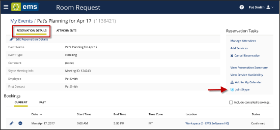

Skype for Business in the EMS Web App
Everyday Users can now integrate audio/video conferencing tools with EMS applications, starting with Skype for Business. It will no longer be necessary for users to simultaneously create a separate meeting to enable an audio/video conferencing component to their meetings. The EMS integration of Skype for Business allows users to easily integrate instant messaging and audio/video conferencing to their meetings without the need for A/V support.

|
Important Notes:
- Skype for Business is ONLY available on Exchange-enabled templates.
- Users cannot edit or remove Skype for Business meetings from their reservations. Users can delete the link but the Join link will remain enabled.
- For more information about Configuring Skype for Business, click here.
|
This topic outlines how to:
To add Skype for Business to your reservation:
There are multiple ways to add or remove Skype for Business to your reservation.
- Open and log into the EMS Web App.
- Begin creating your reservation.
- You will see an Add Skype to Reservation toggle on both the Room & Attendees and Reservation Details tabs. Skype for Business can be added to your reservation from either of these tabs.
- If this is your first time adding a Skype for Business meeting in the Web App, a Skype authentication dialog box will appear.

- Click Continue to Login. In the new browser window, enter your email address and password to authenticate your Skype for Business account.
-
If the user's Skype account is authenticated, they can continue creating their reservation.
-
If the user's Skype account is not authenticated, an authentication modal will appear.
- If the user fails to authenticate their Skype account, the Skype toggle will be disabled.
- Once the Add Skype to Reservation toggle is set to On, a confirmation will appear at the top of the screen indicating that Skype information will be added once you've completed your reservation.


|
Note: The user who created the meeting will be able to view the Skype for Business meeting details (including Skype meeting link and call-in information) from the Browse Events, Browse Locations, and Browse People screens.
Once you have added Skype to your reservation, the meeting attendees will receive an email notification including the Join Skype link and call-in information.
|
- To remove Skype for Business from your meeting, set the Add Skype to Reservation toggle from either the Room & Attendees or Reservation Details tabs to Off. A message will appear at the top of the screen, confirming that Skype information has been removed from your reservation.
To join a Skype for Business meeting from the EMS Web App:
|
|
Note: You can join a Skype for Business meeting that has been added to your reservation from multiple places in the EMS Web App:
- My Booking Details Modal
- View Reservation
|
- From My Events, navigate to the Reservation Tasks column on the Reservation Details tab. Click the Join Skype icon to launch your Skype for Business meeting.

- From the Booking Details page, navigate to the Event Details tab. At the bottom of the Event Details tab, click the Join Skype button to instantly launch your Skype for Business meeting.

For more information regarding features of Skype for Business, please reference the Microsoft Skype for Business User Guide.